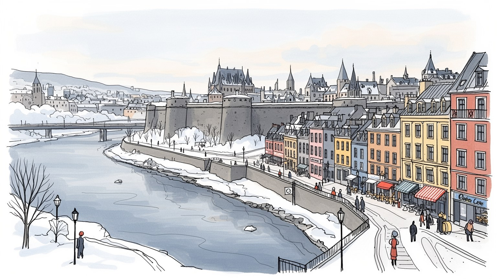
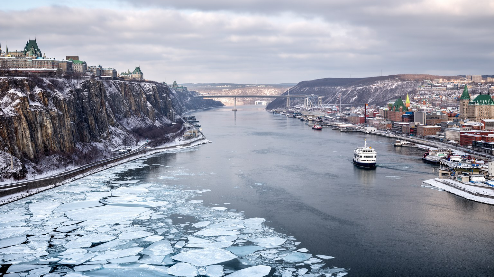
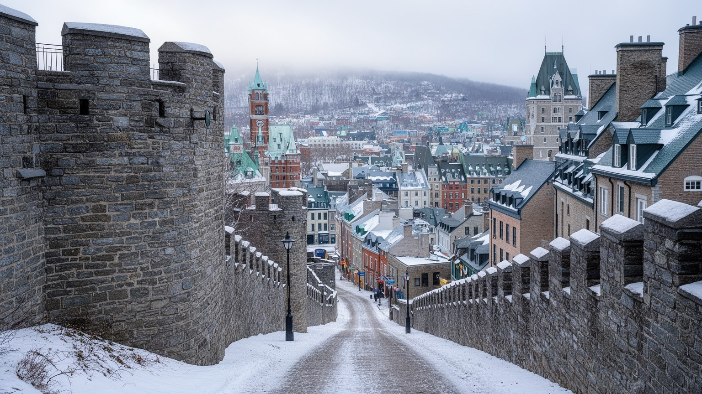
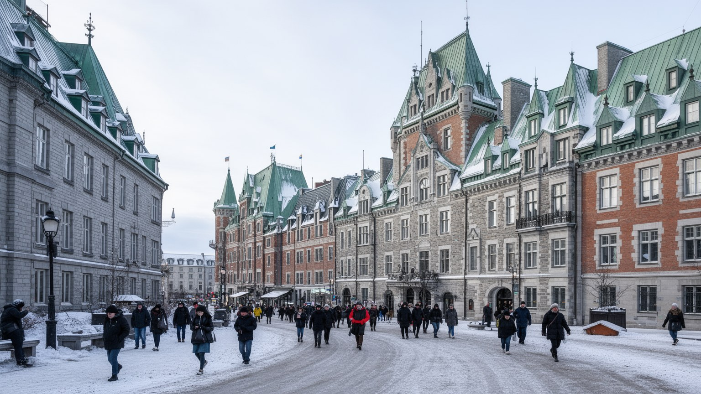
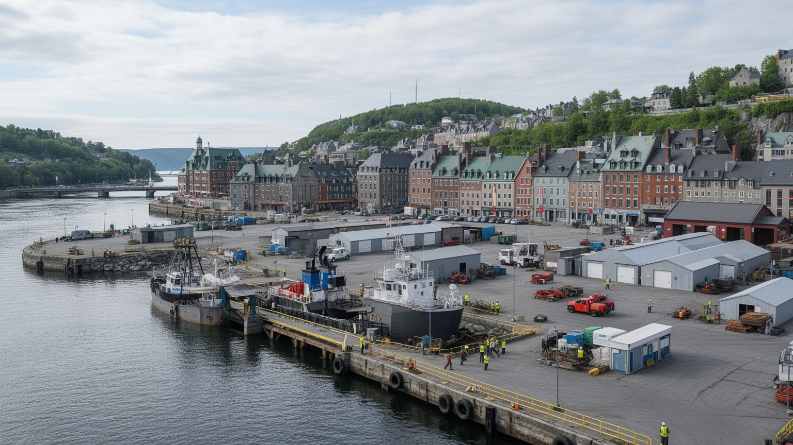
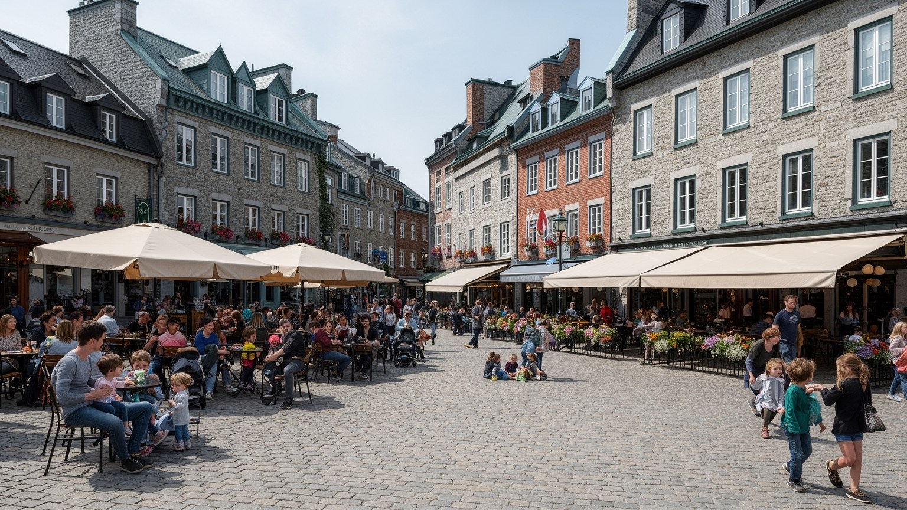
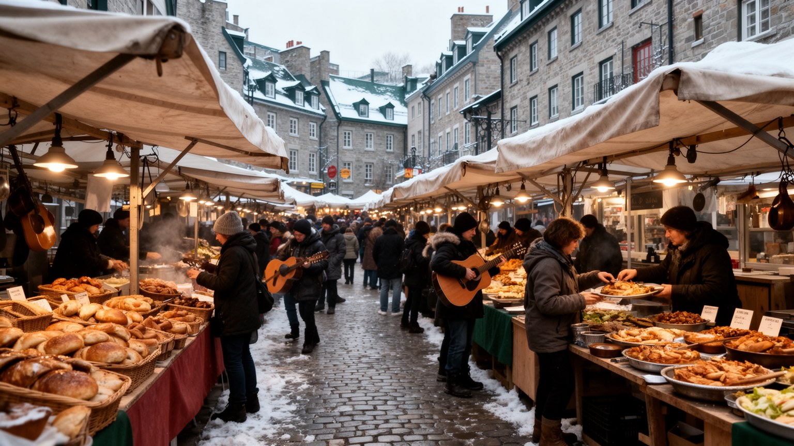
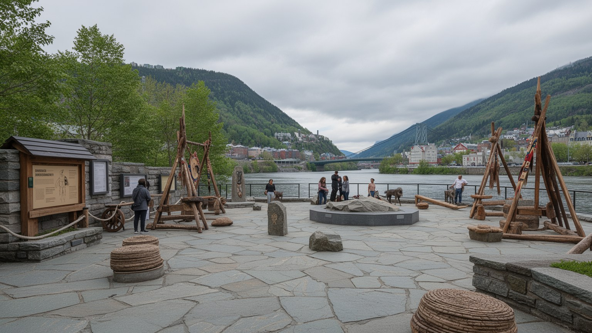
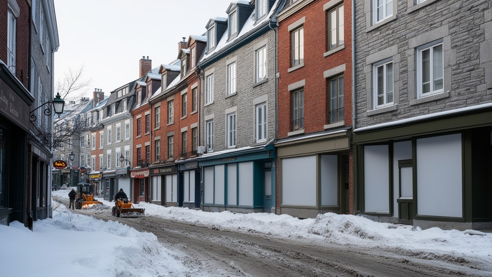
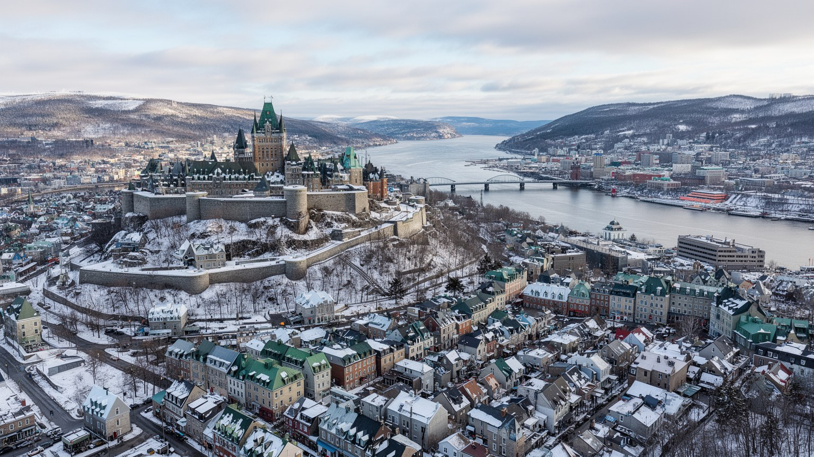

地政学
ケベック・シティはセントローレンス川の狭まる地点を見下ろす州都です。北米の仏語圏政治、連邦制、先住民との関係、港湾と北方資源への通路が交差し、城壁の景観は防衛と植民の記憶も帯びています。州都の街路です。

🇨🇦 カナダ / ケベック州 / World City Atlas
セントローレンス川の高台に築かれた、北米でも特に濃くフランス語圏の記憶を保つ州都。城壁、行政、港、冬祭り、住宅地、先住民との関係が近距離で重なります。
都市の骨格
ケベック・シティは、崖上の旧市街、川沿いの港、州議会、郊外住宅地が近くにまとまる都市です。観光地の石畳の背後で、行政、冬の通勤、港湾物流、先住民との関係が日常を形作ります。

ケベック・シティはセントローレンス川の狭まる地点を見下ろす州都です。北米の仏語圏政治、連邦制、先住民との関係、港湾と北方資源への通路が交差し、城壁の景観は防衛と植民の記憶も帯びています。州都の街路です。
州政府、保険、教育、医療、観光、港湾が雇用の柱です。公務と専門職の安定の裏で、ホテル、飲食、除雪、清掃、港湾、介護、バス運転の労働が冬を含む都市運営を支え、季節差も大きいです。生活を日々支えます。
旧市街の教会、修道会の記憶、フランス語の劇場、冬祭り、民俗音楽が都市の暦を作ります。同時に先住民文化、移民の信仰、世俗化後の教会利用が重なり、信仰は遺産と生活の間で続きます。今も街を深く形作ります。
観光客は城壁、シャトー、坂道、港、冬祭りを歩きますが、住民には雪、家賃、郊外通勤、公共交通、観光混雑、若者の雇用が日常の課題です。住宅街と名所の距離の近さが魅力と摩擦を生みます。今も調整が続きます。

ケベック・シティの地形は、セントローレンス川が狭まり、崖上の高台が水路を見下ろす構造から始まります。旧市街の上町は防衛と行政に適した場所で、下町は港、倉庫、商業、職人の生活に近い場所でした。坂道、階段、ケーブルカー、城門、川辺の道路は、観光の演出である前に高低差を処理する都市装置です。冬には凍った歩道と急坂が移動を難しくし、春の雪解けと川の水位は港や低地の管理に関わります。対岸のレビや郊外との関係も、橋とフェリーを通じて都市圏を形作ります。川は美しい眺望だけではなく、五大湖、大西洋、北方地域を結ぶ輸送路であり、歴史的には軍事と交易の境界でした。地形を読むと、城壁の中だけではなく、港湾、郊外住宅、橋、低地の再開発までが一つの都市として見えてきます。高台にある州議会やホテル、下町の石造りの商店、川沿いのクルーズ船は、同じ地形の別々の使い方です。徒歩で回れる歴史地区の小ささと、車やバスで広がる都市圏の大きさの差も、この地形から生まれます。地図上では近く見える地区でも、坂、雪、橋の位置が移動の実感を変えます。観光の短い散歩と住民の毎日の通勤は、同じ地形をまったく違う負担として経験します。だから川と崖は景観ではなく、住宅価格、除雪、救急、物流、公共交通の判断を左右する基礎条件です。都市の骨格そのものです。

ケベック・シティの城壁は、北米の都市景観の中で特別な存在感を持ちます。石造りの門、稜堡、砲台、狭い通り、広場は、観光客にヨーロッパ的な印象を与えますが、その美しさは軍事、防衛、植民、土地支配の歴史と切り離せません。フランス植民地の拠点として始まり、英仏の争い、英国支配、カナダ連邦の成立を経て、城壁は軍事施設から文化遺産へ意味を変えてきました。城壁の内側には修道院、教会、行政、商店、ホテルが密に並び、外側には近代的な街区と住宅地が広がります。遺産保存は都市の誇りである一方、生活空間を観光の舞台へ変える力も持ちます。古い建物を残すには維持費、規制、バリアフリー、住民の暮らしとの調整が必要です。ケベック・シティを見るときは、城壁を絵葉書としてだけでなく、権力の境界であり、今は公共空間として再利用されている構造物として読むことが重要です。保存された歴史は、誰の記憶を前面に出し、誰の経験を薄くするかという問いも含みます。城門をくぐる体験は魅力的ですが、そこには内側と外側を分ける感覚も残ります。観光の価値を高めるほど、働く人の通勤、配送、住民の買い物、車いす利用者の移動をどう確保するかが問われます。城壁都市であることは、保存と日常の折り合いを毎日試す条件でもあります。雪の日にはその難しさがさらに見えます。

ケベック・シティは、人口規模だけならモントリオールより小さいものの、ケベック州の政治を動かす首都です。州議会、官庁、裁判所、公共機関、政策団体、報道、大学が集まり、フランス語圏カナダの権利、教育、移民、医療、言語政策、連邦政府との関係をめぐる議論がここで制度になります。言語は日常会話の問題にとどまらず、学校制度、看板、求人、行政サービス、文化予算、移民統合の条件に関わります。州都としての都市は、観光客が見る旧市街とは別に、平日の通勤、公務員の仕事、政治集会、記者会見、ロビー活動で動いています。独立運動の記憶や自治をめぐる議論は、現在も都市の公共空間に影を落とします。同時に、先住民の権利、北方地域の資源開発、環境政策も州政治の重要な論点です。ケベック・シティの地政学は、首都オタワとの距離、モントリオールとの役割分担、北米の英語圏市場との接続の中にあります。街の静かな行政機能は、仏語圏の文化を守る制度と、開かれた移民社会をどう両立するかという難しい課題を背負っています。州都の仕事は観光の華やかさより目立ちませんが、学校の言語、医療制度、移民支援、地方への投資を通じて州全体の生活に届きます。政治の中心が比較的小さな都市にあることで、行政の顔が街路に近く見える点も特徴です。その近さが市民参加を促します。

ケベック・シティの港は、旧市街の景観やクルーズ観光の背景に見えますが、都市を現実の物流に結びつける重要な基盤です。セントローレンス川を通る貨物、穀物、資源、建材、燃料、港湾サービスは、地域経済と広い北大西洋の流れに接続しています。港湾労働、通関、倉庫、保守、タグボート、トラック輸送、鉄道との接続は、観光案内では目立ちにくい仕事です。川沿いの再開発は散歩道、博物館、ホテル、クルーズ船を呼び込みますが、物流空間、騒音、環境負荷、労使関係との調整も必要になります。冬の氷、潮汐、風、気候変動による水位の変化は、港の運営と川辺の安全に影響します。港があることで、ケベック・シティは単なる歴史都市ではなく、資源と消費を運ぶ実務都市でもあります。食料価格、建設、燃料供給、観光船の季節運航は、川の条件に左右されます。水辺を歩くとき、石畳の美しさと同時に、見えにくい貨物の動きや働く人の時間を想像できるかが、都市理解を深めます。港の将来は、脱炭素、近隣の健康、雇用、川の景観をどう同時に扱うかにかかっています。クルーズ船がもたらす人の流れと、貨物船が担う物の流れは、同じ岸辺で違う時間割を持ちます。観光港としての快適さを高めるほど、実務の港をどこまで見せ、どこで守るかという選択も生まれます。川の仕事は都市の足元を支えます。
ケベック・シティの観光は、城壁、シャトー・フロントナック、プチ・シャンプラン、ノートルダム聖堂、戦場公園、冬祭り、川の眺望を中心に成り立ちます。徒歩で歴史地区を回りやすいことは大きな魅力ですが、観光地の小ささは混雑、短期滞在、土産物化、住宅利用の変化を生みやすくします。世界遺産の価値は、建物の外観だけでなく、そこに残る生活、商店、教会、学校、公共空間が続いている点にあります。観光収入はホテル、飲食、ガイド、交通、清掃、イベント、文化施設を支えますが、季節によって仕事量が変わり、賃金や住宅費の問題も起きます。冬祭りは寒さを都市の個性へ変える一方、警備、除雪、仮設施設、宿泊価格、住民の移動に負担を与えます。観光を成功させるには、外から訪れる人の満足だけでなく、住民が買い物をし、子どもを連れ、静かに暮らせる余地を守る必要があります。ケベック・シティの遺産は、保存された景色というより、観光経済と日常生活を毎年調整し続ける仕組みとして見ると理解しやすくなります。名所の周辺に普通の生活が残るからこそ、旧市街は舞台装置ではなく都市であり続けます。飲食店や土産物店も、観光客だけでなく地元の働き手、学生、近隣住民が使える場所であって初めて街の厚みになります。写真に残る景色の背後に、仕込み、清掃、配送、修繕の時間があることも忘れられません。

ケベック・シティの冬は、都市の景観を美しくするだけでなく、行政と生活の実務を大きく変えます。積雪、凍結、強い風、短い日照は、通勤、通学、観光、港湾、建設、救急、除雪、暖房費を左右します。旧市街の坂道や石畳は雪で滑りやすくなり、階段や狭い歩道の管理は観光と住民双方の安全に直結します。除雪車、塩、排雪場、歩道の優先順位、バスの運行、学校の休校判断は、冬の都市を支える見えにくい制度です。寒さはすべての人に同じではありません。低所得世帯、高齢者、ホームレス状態の人、移民の新住民、屋外労働者は、暖房費や衣類、移動の負担をより強く受けます。一方で、冬祭り、氷のカヌー、スケート、雪の広場は、厳しい気候を文化へ変える力を持ちます。重要なのは、冬を楽しむ都市イメージと、冬で孤立する人への支援を同時に見ることです。気候変動は単に暖かい冬をもたらすのではなく、凍結と融解、雨氷、豪雨、熱波を複雑にします。ケベック・シティの成熟は、寒さを観光資源にするだけでなく、冬でも安全に歩ける道と住まいを確保できるかに表れます。バス停の風よけ、集合住宅の断熱、雪置き場、夜間の照明は小さく見えて生活の質を決めます。冬を前提にした都市では、公共サービスの細部がそのまま福祉の表情になります。雪景色は、支える労働があって初めて美しく保たれます。

ケベック・シティの文化は、フランス語、カトリックの記憶、修道会、民俗音楽、劇場、出版、冬の祭りが重なって作られています。旧市街の教会や修道院は、信仰の場であると同時に、教育、医療、慈善、女性の労働、移民受け入れの歴史を抱えています。現代のケベック社会では世俗化が進み、教会は礼拝だけでなく、コンサート、展示、地域活動、保存対象として使われることも増えました。宗教は消えたのではなく、遺産、儀礼、家族の記憶、観光、地域の支援へ形を変えています。フランス語文化を守る意識は強い一方、移民の増加によってムスリム、ユダヤ系、仏教徒、正教会、福音派などの暮らしも都市に加わります。宗教的な服装や公共性をめぐる議論は、ケベックの世俗主義と多文化性の緊張を示します。文化を読むには、祭りや劇場の華やかさだけでなく、誰が公共空間で自分の言語や信仰を表せるのかを見る必要があります。ケベック・シティの個性は、古い教会の尖塔と、現代の世俗的な公共制度が同じ街路に並ぶところにあります。その並存は静かですが、教育、雇用、移民統合、観光表現の中で日々調整されています。演劇や音楽の場はフランス語文化を更新し、若い世代や移民の表現を受け入れる入口にもなります。古い宗教建築を守ることと、新しい住民の信仰や無宗教の権利を尊重することは、同じ公共性の課題です。

ケベック・シティを語るとき、フランス植民地の始まりだけを出発点にすると、より長い土地の記憶が見えなくなります。セントローレンス川流域は欧州到来以前から先住民の移動、交易、漁労、外交の場であり、現在も近郊のウェンダットをはじめ、多くの先住民コミュニティとの関係が都市の歴史と政治に関わっています。植民都市の城壁、教会、砦、地名は、欧州の制度が土地を整理し直した痕跡であり、同時に先住民の土地利用、言語、条約、同化政策、寄宿学校の傷を考える入口でもあります。観光が植民地風の美しさを強調するほど、その前にあった時間や現在の先住民の声は薄くなりがちです。博物館、学校、公共サイン、記念式典、芸術、政治協議を通じて、都市は自分の物語を更新できます。和解は象徴的な言葉だけではなく、教育、土地、医療、住宅、文化施設、資源開発の判断に結びつく必要があります。ケベック・シティを深く読むには、城壁の石を眺めるだけでなく、川、交易路、地名、現代の先住民アーティストと政治の声を同じ地図に重ねることが大切です。州都であるこの都市には、北方地域の政策や資源開発を決める場としての責任もあります。先住民の歴史を観光の補足説明に閉じ込めず、現在の権利と都市制度の問題として扱えるかが問われます。その姿勢が都市の信頼を作ります。

ケベック・シティの日常は、旧市街の石畳だけでなく、サン・ロック、サン・ジャン・バティスト、リムワル、サント・フォワ、郊外の住宅地、ショッピングセンター、大学、病院、バス路線に広がっています。中心部では低層住宅、古いアパート、商店街、坂道が近く、観光地に近い便利さと家賃上昇が同時にあります。郊外では広い住まいを得やすい一方、車への依存が強まり、冬の道路、駐車、通勤時間が生活を左右します。学生、若い家族、高齢者、公務員、観光業の労働者、移民の新住民は、同じ都市にいても住む地区と時間割が違います。住宅問題は部屋の広さだけでなく、暖房費、断熱、除雪、保育、学校、医療、食料品店、バスの本数と結びつきます。旧市街の短期滞在が増えると、住民向けの店や賃貸住宅が減ることもあります。ケベック・シティの生活を読むには、絵になる通りの背後で、冬の朝に雪をよけ、バスを待ち、保育園へ向かい、病院や役所で働く人の時間を見る必要があります。都市の魅力は、名所の保存だけではなく、普通の住民が長く住み続けられる条件によって支えられます。食料品店、学校、診療所、公園が歩ける距離にあるかは、寒い季節ほど大きな差になります。観光地区の近くで暮らす人にとって、静けさ、家賃、配送車、夜の人通りは毎日の生活条件です。日常の使いやすさが都市を支えます。

ケベック・シティは、巨大な金融都市ではありません。しかし、世界都市を読むうえで重要なのは規模だけではなく、制度、記憶、言語、観光、生活がどれほど濃く重なっているかです。この都市では、城壁の内側に植民地の歴史と観光経済が残り、州議会と官庁がフランス語圏の政策を動かし、川の港が北大西洋と内陸を結び、冬の気候が暮らしの細部を決めます。旧市街の美しさは強い第一印象を与えますが、その背後には先住民との関係、世俗化した宗教遺産、季節労働、住宅費、郊外化、港湾の環境負荷という現実があります。ケベック・シティの価値は、ヨーロッパ風の景色を北米で保存している点だけではありません。英語圏大陸の中でフランス語の公共文化を維持し、歴史遺産を観光に開きながら、住民の生活を守ろうとする緊張にあります。街を読む視点を城壁から川、議会、住宅地、先住民の記憶へ広げると、この都市は小さな州都でありながら、言語と土地の政治を凝縮した地図として見えてきます。観光で訪れる人にも、そこで暮らす人にも、都市の魅力と責任が同じ石畳の上にあります。見た目の小ささに反して、扱う論点は連邦制、少数言語、植民地記憶、冬の福祉、港湾環境へ広がります。だからこの都市は、経済規模だけでは測れない都市の重要性を示す好例です。その読み方が街を立体化します。